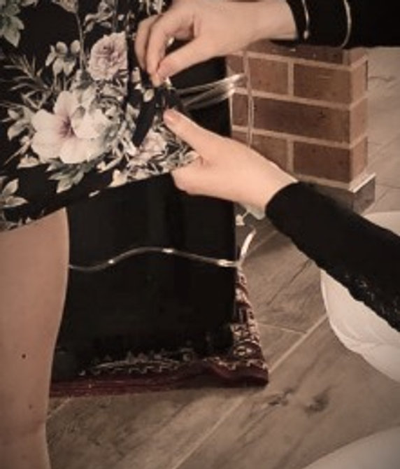
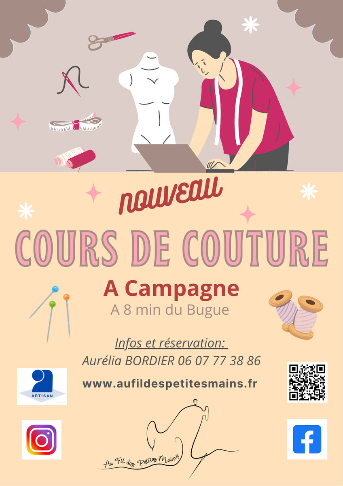
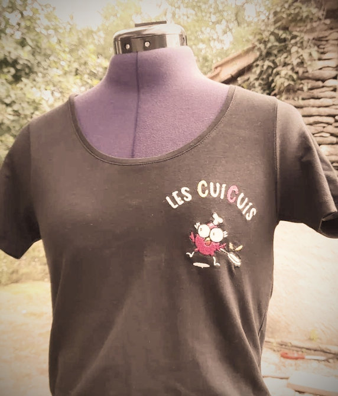
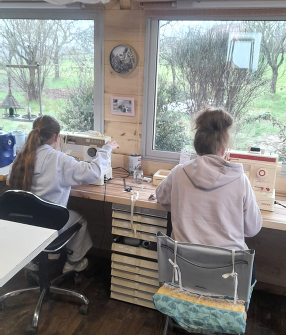
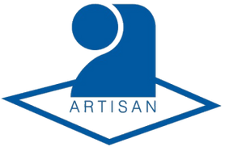
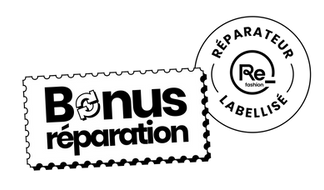
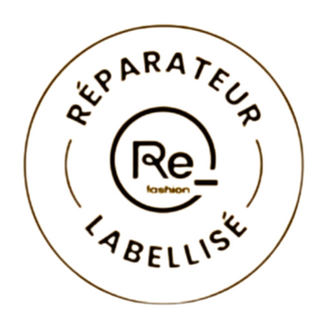

Retouches
Ourlets, pinces, réparations, pose de fermetures éclair… Je redonne vie à vos vêtements avec un service sur mesure.
En savoir plusJe suis Aurélia, installée depuis juillet 2022 dans mon atelier de couture à Campagne, en Dordogne (Périgord Noir). Je vous propose de la broderie numérique personnalisée pour vous ou votre entreprise, de la retouche de vêtements, ainsi que des ateliers et cours de couture.

Lundi – vendredi : 8h30 – 18h00 • Samedi : 8h30 – 12h30
Uniquement sur rendez-vous

Ourlets, pinces, réparations, pose de fermetures éclair… Je redonne vie à vos vêtements avec un service sur mesure.
En savoir plus
Broderie numérique sur mesure pour les entreprises, les événements ou pour offrir un cadeau unique et personnalisé.
En savoir plus
Des cours et ateliers de couture pour enfants, ados et adultes, adaptés à tous les niveaux, en groupe ou en individuel.
En savoir plusLes cours de couture en groupe reprennent en septembre. Les cours individuels, eux, se poursuivent tout l'été sur rendez-vous.
Artisan reconnu, je suis également Répar-acteur labellisé : vous pouvez bénéficier du Bonus Réparation pour vos retouches, une aide éco-responsable qui soutient l'artisanat local.


